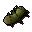
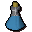

Potato cactus

| Config name | cactus_potato |
| Item id | 3138 |
| Weight | 500g |
| Members | Yes |
| Tradeable | Yes |
| Stackable | No |
| Defined in | scripts/skill_herblore/configs/brewing/potions_additives.obj |
Potato cactus
How am I supposed to eat that?!
Show 8 ground spawns on the world map → Open in knowledge graph →
Used to make
| Skill | Level | XP | Ingredients | Tool | How | Where | Makes |
|---|---|---|---|---|---|---|---|
| Herblore | 76 | 172.5 | use on item |  Magic potion(3)members |
Ground spawns
| Area | Coordinates | Level | Count | Map |
|---|---|---|---|---|
| unlabelled | 3460, 9484 | 2 | 1 | view |
| unlabelled | 3461, 9480 | 2 | 1 | view |
| unlabelled | 3465, 9477 | 2 | 1 | view |
| unlabelled | 3467, 9493 | 0 | 1 | view |
| unlabelled | 3470, 9502 | 0 | 1 | view |
| unlabelled | 3474, 9509 | 0 | 1 | view |
| unlabelled | 3479, 9483 | 0 | 1 | view |
| unlabelled | 3486, 9517 | 0 | 1 | view |